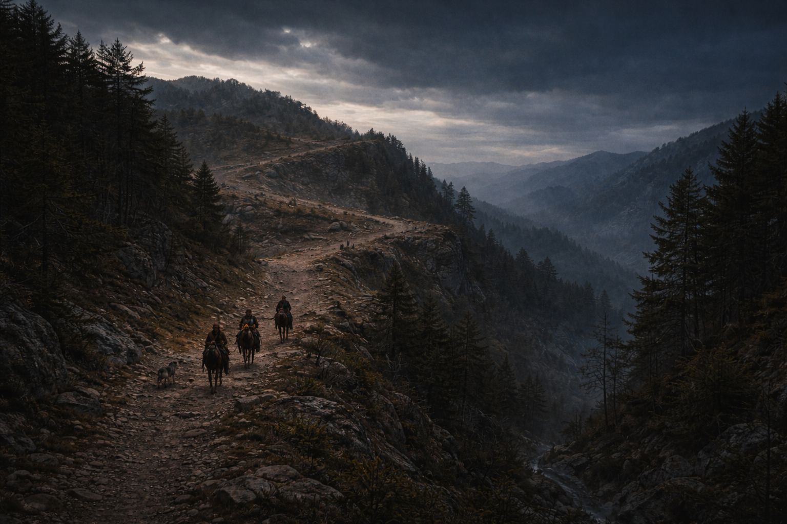
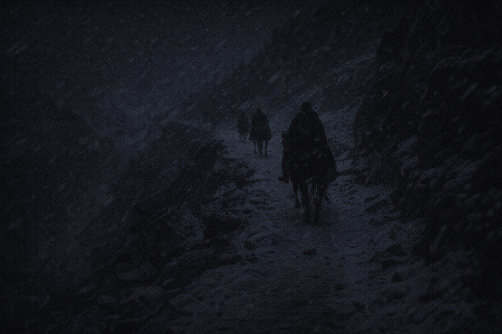

By Shawn Inmon
Last week we learned the three tenses: PAST (already happened), PRESENT (happening now), FUTURE (will happen). This week we go DEEPER!
Last Week: The team stayed on the island while Werda-ak recovered. Alex trained the villagers for 10 days.
This Week: They continue their journey, climbing into the mountains toward Hakun-ah, the monastery of the holy men!
When writing a paragraph, you should use the SAME tense throughout. Jumping between tenses confuses readers!
This jumps between past, present, and future! The reader gets confused about when things happen.
All verbs are in PAST tense. The reader knows all events already happened!
Pick ONE tense for your paragraph and stick with it. Check every verb to make sure it matches!
The author keeps ALL verbs in past tense when describing what happened: climbed, explained, were, had built, could lead, was. This creates a clear narrative!
Senta-eh shouted "Manta-ak!" (which means "Stop!"). Alex turned and saw Werda-ak's horse walking without a rider. Werda-ak had fallen off, unconscious!
Just like Werda-ak needed to be CONSISTENT with his honesty, writers need to be CONSISTENT with their verb tenses!
When you see a signal word, it tells you which tense to use. "Yesterday, Alex climbed." "Tomorrow, they will reach the mountain."
"Yesterday, Monda-ak catches a rabbit and brings it to Alex."
Problem: "Yesterday" is a PAST signal word, but "catches" and "brings" are present tense!
"Yesterday, Monda-ak caught a rabbit and brought it to Alex."
"Tomorrow, they climbed the mountain."
Problem: "Tomorrow" is a FUTURE signal word, but "climbed" is past tense!
"Tomorrow, they will climb the mountain."
ELEVATION
Definition: The height of a place above sea level; how high up something is.
REVERIE
Definition: A state of being lost in pleasant thoughts; daydreaming.
MONASTERY
Definition: A building where monks or other religious people live, work, and pray together.
TRIBUTE
Definition: A payment or gift given to show respect or as a form of thanks.
"Some tribes paid tribute to the monastery by bringing them meat several times a year."
REVITALIZED
Definition: Given new life, energy, or strength; refreshed and renewed.
"After the winter rest, humans and animals alike were revitalized."
THAW
Definition: When frozen things (like snow or ice) melt and become warmer; the end of a cold period.
"The day of the thaw, much of the snow will release and tumble down the mountain."
| Tense | Singular Subject | Plural Subject |
|---|---|---|
| Past | Alex walked | They walked |
| Present | Alex walks (add -s!) | They walk (no -s) |
| Future | Alex will walk | They will walk |
In present tense, singular subjects (he, she, it, Alex) need verbs ending in -s. Plural subjects (they, we, the monks) do NOT add -s.
The narration (who said it) stays in past tense. The dialogue (what was said) can use present or future because that's what the character actually said!
"Tokin-ak said, 'We will talk tonight, then you are free to do whatever you want.'"
Narration: past ("said"). Dialogue: future and present (what Tokin-ak actually says).
As we read, notice how the author maintains consistent past tense in narration while using different tenses in dialogue.
When they entered the monastery, the oldest monk washed everyone's feet! Alex felt extremely uncomfortable - his feet were dirty and smelly from the long journey.
All the verbs in the narration are past tense: entered, washed, felt, were, showed, served, made. The author maintains consistency!
Tokin-ak explained that the mountain pass was blocked by snow. They had two choices:
Alex swallowed his pride and accepted the offer. He said, "Thank you for your offer of hospitality. We will stay with you."
Notice: The narration is past tense, but Alex's dialogue uses future tense because that's what he actually said!
Tokin-ak trained Alex in chaimi - self-defense using a walking stick. This was how Tokin-ak had defeated younger, stronger men on the trail. Alex knew this skill might save his life someday.
After months of waiting, a new sound echoed through the monastery - the deep rumble of snow and ice beginning to melt. Tokin-ak said, "The thaw is almost here."
Tokin-ak said, "The thaw is almost here. It won't be tonight or tomorrow, but soon." Notice how the dialogue mixes present and future tenses while the narration stays in past!
| Present | Past | Example from Story |
|---|---|---|
| lead | led | Tokin-ak led them to Hakun-ah. |
| teach | taught | The monks taught Alex chaimi. |
| give | gave | Tokin-ak gave Alex a pendant. |
| know | knew | Alex knew they had to stay. |
| become | became | They became revitalized. |
| spend | spent | They spent the winter there. |
Why did Alex and his team have to stay at Hakun-ah for the winter? What did they do during this time?
"Alex and his team had to stay at Hakun-ah because the mountain pass was blocked by snow."
Alex and his team had to stay at Hakun-ah because the mountain pass was blocked by snow and ice. First, Tokin-ak explained that they could either freeze trying to cross or wait for the thaw. Second, each team member spent the winter productively: Werda-ak rested his leg and made friends, Senta-eh crafted new arrows, and Alex chopped wood and learned chaimi from the monks. Third, when spring finally arrived, Tokin-ak gave Alex a special pendant that might help him in a "time of need." The winter at Hakun-ah revitalized the entire team and prepared them to continue their journey.
Every verb is in past tense. Subject-verb agreement is correct throughout. The irregular verbs (had, was, spent, made, gave, arrived) are all in correct past tense form!
| Skill | What It Means | Example |
|---|---|---|
| Tense Consistency | Keep same tense throughout paragraph | All past: walked, talked, saw |
| Signal Words | Words that tell which tense to use | Yesterday = past, Tomorrow = future |
| Subject-Verb Agreement | Subjects and verbs must match | He walks (singular), They walk (plural) |
| Dialogue Shifts | Dialogue can use different tenses | Alex said, "We will go tomorrow." |